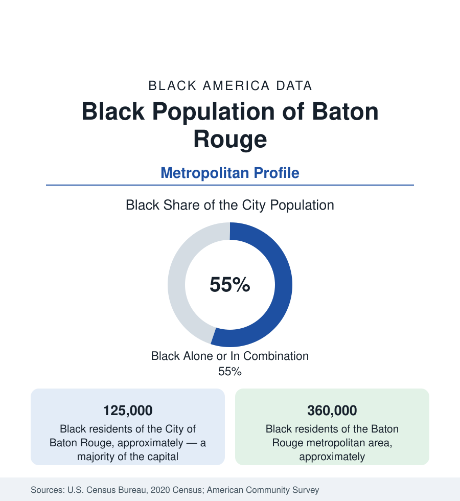

Black Cities
Black Baton Rouge: Southern University's City on the River
Baton Rouge is majority-Black — about 125,000 city residents — home to the largest HBCU system in America. The census profile.

Baton Rouge, Louisiana's capital, holds about 125,000 Black residents — a majority of its 227,000 people — and about 360,000 across the metropolitan area. The profile's anchors are two universities on the same river bluffs: Southern University, flagship of the nation's only HBCU system, and LSU — and an industrial river economy whose plants and parishes frame the environmental data of the whole lower Mississippi.
Scotlandville and the Southern Bluff
Black Baton Rouge centers on Scotlandville — the community at the city's northern edge that grew around Southern University (founded in New Orleans in 1880, relocated to the Scotlandville bluff in 1914) into one of the largest Black communities in Louisiana, an incorporated-era town absorbed by the city, its own civic world intact in the data: Southern's campus (enrolling in the range of seven to eight thousand at the flagship, with the system's law center — among the most productive Black law schools in the nation in the law profile's terms — and its agricultural center) is the community's downtown. The Old South Baton Rouge district (around the university's other pole, between LSU and downtown — the 'bottom' of local geography) holds the older urban fabric; the modern mass runs north and east (Baker and Zachary, the independent Black-suburban cities of the northern parish; the Florida Boulevard corridor's subdivisions; Denham Springs across the Amite in Livingston Parish, the whiter shore). LSU's own Black enrollment, at the state's flagship on the southern bluff, runs in the high single digits — the two universities' data, read together, are the Louisiana higher-education file in miniature.
The River's Industrial Economy
The metro's Black workforce runs on the capital pattern plus the river: state government and the universities, the hospitals, and the petrochemical corridor — the refineries and chemical plants lining the Mississippi from Baton Rouge toward New Orleans, among the largest industrial concentrations in America, employing Black workers across the craft and operator tiers at industrial wages. The corridor's other data are the environmental file: the fence-line communities (several of them historic Black towns planted beside the plants — the corridor's geography placed industry on the cheap land beside the communities with the least power) record the air-toxics and health-surveillance data that made 'Cancer Alley' a national term, with the current era's permit fights and monitoring programs the file's active layer. The port, the ExxonMobil complex (among the nation's largest refineries), and the plant-construction cycles distribute the blue-collar economy whose union and contractor demographics follow the construction profile.
Indicators and the Parish Map
East Baton Rouge Parish — city and suburbs consolidated in a parish-county structure unique in the section — is majority-minority, and its internal data split along the familiar lines with Louisiana accents: the northern districts' poverty indicators at the state's urban floor, the southern and eastern suburbs' Black middle class (the parish's Black homeownership in the subdivisions off Florida and Airline), the school system's long desegregation case (among the nation's longest-running, dismissed only in the 2000s) and its successor politics (the breakaway-city movement in the parish's southeast — the St. George incorporation saga — is the municipal-fragmentation file in modern dress, its demographics stated plainly by all sides). The metro's Black median income runs mid-Louisiana-pack; the suburban parishes (Ascension's growth corridor) post the gains in the estimates.
Change and the Estimates
The estimates show the metro growing on the industrial economy and LSU's scale, its Black population growing fastest in Ascension and the northern parish suburbs, Zachary and Baker's Black suburban institutions strengthening, and Scotlandville's Southern bluff holding the cultural center (the Human Jukebox's marching band is the region's sonic signature). The flood file — the 2016 flood that inundated the metro's northern and eastern districts, Black suburbs included, in one of the costliest rain events in U.S. records — reshaped the housing data of a generation and remains in the insurance and elevation files of every parish profile.
Reading the Baton Rouge Numbers
Baton Rouge is the HBCU-system capital: a majority-Black river city whose Black university is a system flagship, whose industry pays and poisons along the same fence lines, and whose parish map holds the whole Louisiana argument in one county's lines. Its 360,000 metro Black residents are the northern anchor of Black Louisiana, facing New Orleans down the river as the state's second pole.
More in Black Cities
Black Atlanta: Population, Distribution, and Growth of a Black Metropolis
Metro Atlanta holds more than two million Black residents — roughly one in three, second only to New York. The suburban distribution, migration history, and composition of Black Atlanta in the census data.
Black New York: The Largest Black Population in America
The New York metropolitan area holds about 3.4 million Black residents — more than any metro in the nation — and the city itself about two million. The census profile.
Black Washington: The District and the Metro
The Washington metro holds about 1.6 million Black residents, and the District itself — long a majority-Black city — now records a Black share near 41 percent. The census profile.
Source: U.S. Census Bureau, 2020 Census; American Community Survey; Population Estimates Program.